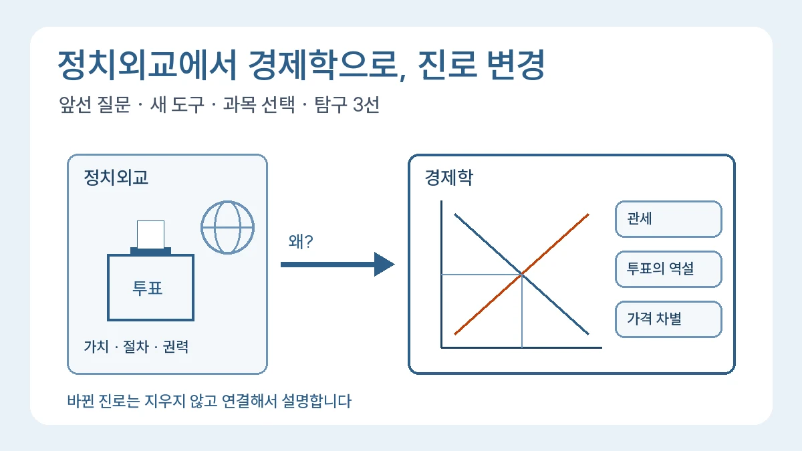

정치외교에서 경제학으로 진로가 바뀌었다면: 평가 문서 읽기, 과목 선택, 경제학 탐구 주제 3선
앞선 질문이 왜 경제학의 도구로 이어졌는지를 기록으로 설명합니다
목차
- 평가 문서는 진로가 바뀐 기록을 어떻게 보나
- 정치외교 기록을 경제학으로 잇는 설명 만들기
- 경제학 탐구는 정치외교 탐구와 무엇이 다른가
- 고교학점제에서 과목을 고르는 이유 세우기
- 정치외교 관심을 살린 경제학 탐구 주제 3가지
- 자주 묻는 질문
- 근거와 확인 범위
핵심 요약
- 5개 대학 공통안은 ‘전공적합성’을 ‘진로역량’으로 바꾸고 진로 탐색 활동과 경험을 평가 항목으로 둠 — 대학별 명칭은 직접 확인
- 서울대·연세대·경희대 2028 문서에는 경제학 관련 인문·사회계열 수학 권장과목이 없음
- 관세 10의 사중손실 100, 세 유권자의 다수결 순환, 가격 차별의 잉여 이동을 가상 수치로 계산

정치외교에서 경제학으로 진로가 바뀌었다면 이전 기록을 숨기기보다, 정치·제도에서 품은 질문이 왜 경제학의 도구로 이어졌는지를 실제 수업 기록으로 설명하는 것이 먼저입니다. 진로 변경 자체가 유리하다거나 불리하다고 단정할 수는 없습니다. 대학과 전형마다 평가 항목이 다르기 때문입니다. 이 글은 평가 문서가 실제로 무엇을 보는지 확인하고, 경제학 탐구가 정치외교 탐구와 어떻게 다른지, 고교학점제에서 어떤 과목을 어떤 이유로 고를지, 그리고 계산까지 해 볼 수 있는 탐구 주제 3가지를 정리합니다. 예시 수치와 학생 장면은 모두 가상의 교육용 예시입니다.
1. 평가 문서는 진로가 바뀐 기록을 어떻게 보나
건국대·경희대·연세대·중앙대·한국외대가 2022년 2월에 낸 공동연구 자료집은 학생부종합전형의 공통 평가요소를 ‘학업역량, 전공적합성, 인성, 발전가능성’에서 ‘학업역량, 진로역량, 공동체역량’으로 바꾸었습니다.[1] 진로역량의 세 항목은 다음과 같습니다.
- 전공(계열) 관련 교과 이수 노력: 관련 과목을 선택하고 학습 단계(위계)에 따라 이수했는가, 공동교육과정 등 추가 노력을 했는가
- 전공(계열) 관련 교과 성취도: 관련 과목의 성취 수준
- 진로 탐색 활동과 경험: 자신의 진로를 탐색하는 과정에서 이루어진 활동이나 경험, 노력
자료집은 ‘전공’ 대신 ‘진로’ 탐색 활동과 경험으로 개념을 넓혔다고 설명하고, 5개 대학의 2024학년도 학생부종합전형 평가에 활용할 계획이라고 적었습니다(PDF 26쪽).[1] 다만 이것은 공통안이고, 지금도 ‘전공적합성’이라는 이름을 쓰는 대학과 전형이 있습니다. 예를 들어 숭실대 2027 면접평가는 전공적합성과 잠재력을 각각 50%로 제시합니다(숭실대 2027 면접 해설). 내가 지원할 학년도·전형의 평가 항목을 직접 확인해야 하는 이유입니다.
진로가 바뀐 기록을 면접에서 어떻게 설명하라고 안내하는지는 대학 문서에도 있습니다. 동국대 2027 가이드북은 학년별 관심 분야가 달랐던 경우 관심이 바뀐 이유와 그 과정의 고민을 중심으로 준비하라고 안내합니다(동국대 2027 진로 변경 해설). 이 안내도 “바뀌면 무조건 유리하다”는 뜻은 아닙니다. 관심이 달라진 이유를 말하는 것과, 지원 분야를 공부할 준비가 됐는지 보여 주는 것은 따로 점검해야 합니다.
2. 정치외교 기록을 경제학으로 잇는 설명 만들기
대학에는 국제정치경제학, 공공선택론처럼 정치와 경제를 함께 다루는 분야가 있습니다. 그래서 정치외교 기록을 지울 필요는 없습니다. 중요한 것은 연결의 근거가 내 학생부에 실제로 있는 장면이어야 한다는 점입니다. 아래 빈칸을 내 기록으로 채워 보세요.
- 앞선 질문: ○학년 ○○ 과목에서 (실제로 다룬 주제)를 탐구하며 (어떤 질문)을 가졌다.
- 막힌 지점: 그 질문은 (가치·절차·권력 관계)만으로는 설명이 부족했다. 예: 정책의 찬반은 정리했지만 누가 얼마나 이익이나 비용을 보는지는 숫자로 말하지 못했다.
- 새 도구를 만난 장면: (경제 수업·독서·자료 분석)에서 (인센티브, 비용과 편익, 수요와 공급)이라는 도구를 처음 써 보았다.
- 바뀐 공부: 그래서 (과목 선택, 다음 탐구)를 이렇게 바꿨고, 아직 (못 한 것)이 남아 있다.
설명 문장 고치기(가상 예시)
수정 전: 미·중 무역 전쟁의 이면에 경제적 인센티브가 핵심 동력으로 작용함을 깨닫고, 시장 메커니즘을 수리·통계적으로 분석하는 경제학이 필수적이라는 확신을 얻었습니다.
수정 후: 2학년 정치 수업에서 무역 갈등을 외교 협상 과정으로만 정리했는데, 경제 수업에서 관세가 국내 가격을 바꾼다는 그래프를 보고 누가 손해를 보는지 계산해 보고 싶어졌습니다. 그래서 관세의 잉여 변화를 직접 계산하는 탐구를 했고, 실제 품목 자료로 확인하는 일은 아직 하지 못했습니다.
수정 전 문장은 누구나 쓸 수 있는 결론이라 면접에서 “구체적으로 무엇을 분석했나요?”라는 질문에 답하기 어렵습니다. 수정 후 문장은 과목, 장면, 한 일, 못 한 일이 모두 드러납니다. 세특은 교사가 수업에서 관찰해 쓰는 기록이므로, 학생이 할 일은 이런 문장을 외우는 것이 아니라 실제로 한 과정과 바뀐 판단을 정확히 남기는 것입니다(교과세특 연결 대표 가이드).
3. 경제학 탐구는 정치외교 탐구와 무엇이 다른가
- 정치외교 탐구의 질문: 무엇이 정당한가, 어떤 절차와 권력 관계가 결정을 만들었는가, 어떤 가치가 충돌하는가
- 경제학 탐구의 질문: 이 제도가 사람들의 선택(인센티브)을 어떻게 바꾸는가, 누가 얼마의 이익과 비용을 보는가, 자료로 확인하면 예상과 맞는가
둘 중 무엇이 더 우월하다는 뜻은 아닙니다. 경제학 탐구로 옮겨 갈 때 흔히 빠지는 것은 측정입니다. “최저임금이 올라 자영업자가 힘들어졌다”에서 멈추지 말고, 무엇을 어떤 자료로 재면 그 주장을 확인할 수 있는지까지 써야 합니다. 국가통계포털(KOSIS), 한국은행 경제통계시스템(ECOS), 공공데이터포털처럼 공공기관이 제공하는 자료를 쓰면 출처를 분명히 밝힐 수 있습니다. 다만 두 지표가 함께 움직인다는 사실만으로 한쪽이 다른 쪽의 원인이라고 쓰지는 않습니다. 시장이 실패하는 경우(외부효과, 정보 비대칭)와 정부 개입이 의도치 않은 비용을 낳는 경우를 함께 따져 보는 것도 경제학 탐구의 기본입니다.
4. 고교학점제에서 과목을 고르는 이유 세우기
먼저 대학 원문을 확인합니다. 이번에 확인한 2028학년도 문서들은 인문·사회계열 경제학 관련 모집단위에 특정 수학 과목을 권장하지 않았습니다.
- 서울대: 사회과학대학은 ‘제2외국어/한문 교과(군) 1과목 이상’ 권장 유형에 있습니다(PDF 2쪽, 인쇄 1쪽).[2]
- 연세대: 상경대학은 ‘전공연계과목 미제시’ 목록에 있습니다(PDF 2쪽).[3]
- 경희대: 2025-08-29 수정 안내에서 학습 위계가 뚜렷하지 않은 ‘인문계열’에는 권장과목을 별도로 두지 않는다고 적었고, 권장과목 표는 자연계열 모집단위만 다룹니다.[4]
권장이 없다는 것이 수학이 필요 없다는 뜻은 아닙니다. 대학의 미시경제학·거시경제학·계량경제학은 미분과 통계를 도구로 많이 씁니다. 그래서 아래 연결은 편집팀의 제안이며, 대학의 권장 문구가 아닙니다. 과목명은 2022 개정 교육과정 과목표를 따랐습니다.[5]
- 수학 일반선택 — 대수, 미적분Ⅰ, 확률과 통계: 미적분Ⅰ의 순간변화율은 ‘하나 더 생산할 때 늘어나는 비용(한계비용)’을 이해하는 바탕이 되고, 확률과 통계는 표본 자료를 읽는 기초가 됩니다.
- 수학 진로선택 — 경제 수학, 미적분Ⅱ: 경제 수학은 경제 개념에 수학을 적용하는 과목이고, 미적분Ⅱ는 더 깊은 분석을 원할 때 고려합니다.
- 사회 진로선택 — 경제, 정치, 법과 사회, 국제 관계의 이해: 2015 개정의 ‘정치와 법’은 2022 개정에서 ‘정치’와 ‘법과 사회’로 나뉘었습니다. 국제 관계의 이해는 정치외교 관심을 국제 경제 문제로 잇기에 좋은 과목입니다.
- 융합선택 — 금융과 경제생활, 사회문제 탐구: 성적 표기 방식은 과목 유형과 교육과정에 따라 다르므로 진로선택·융합선택 성적 표기 가이드에서 확인하세요.
학교마다 개설 과목과 학기가 다르므로 학교 교육과정 편성표를 먼저 확인합니다(고교학점제 선택과목 가이드). 원하는 과목이 개설되지 않았다면 공동교육과정이나 온라인학교 신청 가능 여부를 담당 교사와 확인하세요.
5. 정치외교 관심을 살린 경제학 탐구 주제 3가지
주제 1. 안보를 이유로 한 관세는 국내에서 누구에게 얼마의 비용을 지우는가
연결 과목: 경제(시장과 무역), 국제 관계의 이해, 수학의 일차함수 그래프
작은 나라가 세계 가격을 그대로 받아들인다고 가정하고, 직선 수요(Qd = 100 − P)와 공급(Qs = P − 20)을 그려 봅니다(가상). 세계 가격 40에서는 국내 수요 60, 국내 생산 20으로 40만큼 수입합니다. 관세 10을 붙여 국내 가격이 50이 되면 수요 50, 생산 30, 수입 20으로 줄어듭니다.
- 소비자 잉여 감소: (60 + 50) ÷ 2 × 10 = 550
- 생산자 잉여 증가: (20 + 30) ÷ 2 × 10 = 250
- 정부 관세 수입: 10 × 20 = 200
- 경제 전체의 순손실(사중손실): 550 − 250 − 200 = 100
정치외교 관심은 여기서 살아납니다. 안보나 공급망을 이유로 관세를 매기는 정책이라면, 그 이익을 같은 단위로 재기 어렵다는 점을 분명히 적고 “경제적 비용 100을 감수할 만한가”를 판단 기준과 함께 논의합니다. 실제 품목으로 확장한다면 관세청 수출입무역통계 같은 공식 자료에서 수입량과 가격의 변화를 찾아보되, 같은 시기의 환율이나 경기 변화도 함께 기록합니다.
주제 2. 다수결은 언제나 하나의 결론을 낼까: 투표의 역설과 공공선택론
연결 과목: 정치(민주주의와 선거), 경제(정부의 역할), 확률과 통계(경우의 수)
유권자 세 명의 선호가 ‘A > B > C’, ‘B > C > A’, ‘C > A > B’라고 해 봅시다. 둘씩 다수결을 하면 A가 B를 2 대 1로, B가 C를 2 대 1로, C가 A를 2 대 1로 이깁니다. 개인의 선호는 각자 일관되지만 집단의 선택은 순환합니다. 이것이 콩도르세의 투표의 역설입니다. 여기에 정치인과 유권자도 자기 이익을 고려해 선택한다고 보는 공공선택론의 관점을 더하면, 의제를 올리는 순서가 결과를 바꿀 수 있다는 점을 토론할 수 있습니다.
자료로 넓힐 때는 조심합니다. 선거가 있는 해와 없는 해의 재정 지표를 비교해 볼 수는 있지만, 경기 침체나 감염병 같은 다른 원인을 통제하지 않았다면 “선거 때문에 재정이 나빠졌다”고 쓸 수 없습니다. 특정 정당이나 공약을 ‘포퓰리즘’으로 평가하는 대신, 비교 기준과 확인한 범위를 밝히는 데 집중하세요.
주제 3. 같은 물건에 다른 가격을 매기면 누가 이익을 보는가: 가격 차별
연결 과목: 경제(시장 구조와 시장 실패), 사회문제 탐구, 확률과 통계
물건 하나를 만드는 비용이 2이고, 10까지 낼 의향이 있는 손님 100명과 6까지 낼 의향이 있는 손님 100명이 있다고 해 봅시다(가상).
- 모두에게 6을 받으면: 200명이 사고 기업 이윤 800, 소비자 잉여 400, 합계 1200
- 모두에게 10을 받으면: 100명만 사고 이윤 800, 소비자 잉여 0, 합계 800(400이 사라짐)
- 집단별로 10과 6을 받으면: 200명이 사고 이윤 1200, 소비자 잉여 0, 합계 1200
가격 차별은 거래량을 늘려 전체 잉여를 지킬 수 있지만, 그 잉여가 소비자에게서 기업으로 옮겨 간다는 점을 계산으로 보여 줍니다. 배달·숙박·항공권처럼 시간과 수요에 따라 가격이 바뀌는 사례를 조사할 때는 내가 직접 본 가격과 날짜를 기록하고, 서비스 약관을 어기는 자동 수집이나 다른 사람의 개인정보 수집은 하지 않습니다. 알고리즘이 개인별로 가격을 다르게 매긴다는 주장은 기업이 공개한 자료나 공공기관 조사로 확인한 범위에서만 씁니다.
6. 자주 묻는 질문
코즈의 정리로 플랫폼 가격 차별을 설명해도 되나요?
두 개념은 다루는 문제가 다릅니다. 코즈의 정리는 외부효과(예: 이웃의 소음이나 공장 오염)를 두고, 재산권이 분명하고 거래 비용이 작으면 당사자끼리 협상으로 효율적인 결과에 이를 수 있다는 주장입니다. 가격 차별은 외부효과가 아니라 시장 지배력과 정보에서 생기는 문제입니다. 코즈의 정리를 쓰고 싶다면 층간소음이나 공유 공간 사용처럼 외부효과가 분명한 사례에서 “협상 비용이 크면 왜 작동하기 어려운가”를 따져 보는 편이 정확합니다.
1학년 기록이 전부 정치외교인데 지금 다시 만들어야 하나요?
지나간 기록을 바꿀 수는 없고, 바꿀 필요도 없습니다. 남은 학기의 과목 선택과 탐구에서 경제학의 도구를 실제로 써 본 기록을 쌓고, 앞선 질문과의 연결을 설명할 수 있으면 됩니다. 활동 개수를 늘리기보다 한 가지 탐구를 계산과 자료 확인까지 끝내는 편이 설명하기 쉽습니다.
미적분을 듣지 않으면 경제학과에 지원할 수 없나요?
이번에 확인한 서울대·연세대·경희대 2028 문서에는 경제학 관련 인문·사회계열 모집단위의 수학 권장과목이 없었습니다. 다만 대학마다 문서가 다르고, 수능 응시 과목과 정시 반영 방식은 별도의 문서입니다. 지원할 대학의 해당 학년도 원문을 직접 확인하세요. 진로가 바뀐 학생의 과목 재설계는 경영·교육·심리·예체능 선택과목 글의 ‘권장이 없을 때 과목을 고르는 이유’도 참고할 수 있습니다.
근거와 확인 범위
- [1] 건국대·경희대·연세대·중앙대·한국외대 공동연구 「학생부종합전형 공통 평가요소 및 평가항목」 소책자(2022-02, PDF): 평가요소 개편(PDF 5~6쪽), 진로역량 세부 평가 내용, 2024학년도 활용 계획(PDF 26쪽).
- [2] 서울대 입학본부 — 2028학년도 전공 연계 과목 선택 안내(2025-06-30, PDF): 사회과학대학 권장 유형(PDF 2쪽, 인쇄 1쪽).
- [3] 연세대 입학처 — 2028학년도 전공연계과목 선택 가이드라인(2026-04, PDF): 상경대학 미제시(PDF 2쪽).
- [4] 경희대 입학처 — 2028 자연계열 학문분야의 고등학교 교과 이수 권장과목 수정 안내(2025-08-29, PDF): 인문계열·자율전공 권장과목 미설정(PDF 1쪽).
- [5] 국가교육위원회 고시 제2026-1호 일부개정 포함 초·중등학교 교육과정 총론: 수학·사회 과목표(PDF 38~39쪽, 인쇄 26~27쪽).
- 관세·투표·가격 차별 계산은 편집팀이 만든 가상 수치로, 계산은 코드로 다시 확인했습니다. 다른 대학의 권장과목과 평가 항목은 확인하지 않았습니다(확인일 2026-11-17).
관련 글
인문사회·상경 계열 정책 한계 분석과 방어 논리 구축법NEW
정책 탐구보고서에서 한계와 오차를 숨기지 않고 분석해 서류기반면접의 반론 질문까지 방어하는 방법을 정리합니다.
경영·교육·심리·예체능 학과 선택과목: 서울대·연세대 2028 원문으로 본 권장과 미제시NEW
경영학과·교육학과·심리학과·예체능 계열의 선택과목을 서울대·연세대 2028학년도 원문으로 확인합니다. 권장과목이 없을 때 과목 선택 이유를 세우는 법, 학과별 탐구 질문, 예체능 실기와 학업 계획을 정리합니다.
진로선택과목이란? 2015·2022 개정의 성취도·석차등급·이수 기준NEW
진로선택과목의 실제 예시, 2015·2022 개정 교육과정의 A~C·A~E와 석차등급 차이, 융합선택 예외 및 2026 이수 기준 완화를 구분합니다. 학교·대학 확인 체크리스트를 제공합니다.
이 글은 일반 교육 정보이며 특정 대학 합격·학생부 평가·면접 결과를 보장하지 않습니다. 학교와 대학의 공식 안내를 함께 확인해 주세요.